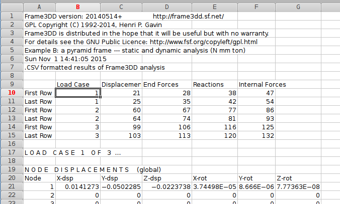
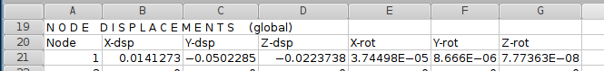
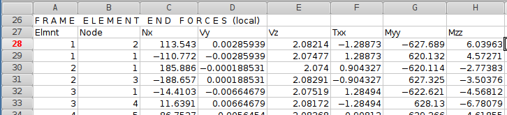
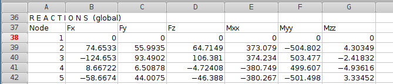
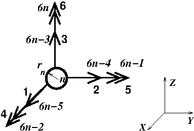
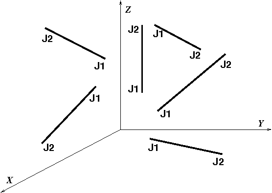
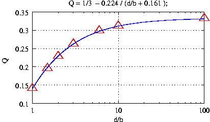
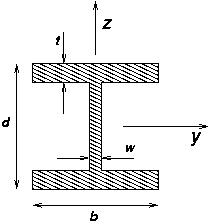
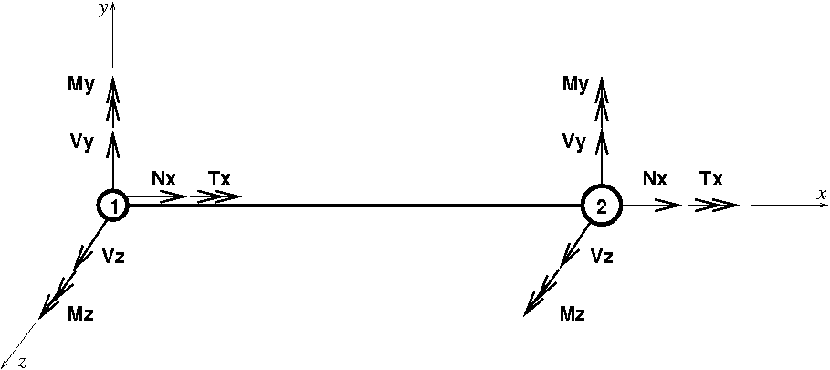

Henri P. Gavin, P.E., Ph.D., - Associate Professor - Henri.Gavin@Duke.edu - tel: 919-660-5201 - fax: 919-660-5219
Frame3DD is a program for the static and dynamic structural analysis of two- and three-dimensional frames and trusses with elastic and geometric stiffness.
Frame3DD is executed from the command prompt (Windows) or shell (Linux) or terminal (OS X), as follows, with filenames changed as required:
frame3dd inputfile.3dd outputfile.txt
Frame3DD reads a plain-text Input Data file, containing joint coordinates, frame element geometry, material moduli, fixed joints, prescribed displacements, load information, and optionally, mass information if a modal analysis is to be carried out.
Frame3DD appends results to a plain-text Output Data file. Results from the most recent analysis are appended to the end of the Output Data file. Each section of the Output Data gives the date and time of the analysis, recapitulates the input information, gives joint displacements in global coordinates, frame element end-forces in local coordinates, reactions in global coordinates, and natural frequencies and mode shapes in global coordinates.
Frame3DD writes a Gnuplot script file used for viewing deformed frames and dynamic mode shapes. If the Output Data is written to a file called MyResultsA.out, the Gnuplot script is written to a file called MyResultsA.plt. Graphical output may be viewed by starting Gnuplot and typing: load 'MyResultsA.plt'.
Frame3DD can consider multiple static load cases in a single analysis.
Frame3DD may optionally interface with Matlab and with spreadsheet programs.
Frame3DD is free open-source software; you may redistribute it and/or modify it under the terms of the GNU General Public License (GPL) as published by the Free Software Foundation. The software is distributed in the hope that it will be useful, but without any warranty; without even the implied warranty of merchantability or fitness for a particular purpose. See LICENSE.txt for details.
The Input Data file is a plain text file and must adhere to the format described below. Several examples are given at http://frame3dd.sourceforge.net/. When writing your own input files, note the following points:
To write your own Input Data file, it may be helpful to start with an example that resembles the system you would like to analyze. Carefully compare the graphical output of the example, the Input Data file, the Output Data file, and the Input Data format, with the variable definitions at the end of this page.
You may edit Input Data files using a good plain text editor (vim, jEdit, nano, gedit (Linux), TextWrangler (OS X), NotePad++ (Windows), etc.), using the Matlab interface, or using spreadsheet programs (GoogleDocs, OpenOffice, Gnumeric, or Excel).
Details regarding the Matlab interface to Frame3DD are here.
Details regarding the spreadsheet interface to Frame3DD are here.
It might take a few tries to get your Input Data just right. Frame3DD checks the Input Data for errors prior to analyzing the system and, where possible, displays descriptive diagnostic messages when errors are found with the Input Data.
echo %TEMP%On other platforms, this is the /tmp directory.
Compiled executable programs are updated with some regularity. Frame3DD installation packages are available for download for Linux, for OS X, and for Windows operating systems as .ZIP archives. These installation .ZIP archives include:
A separate Windows installer includes a Microstran viewer module for Frame3DD.
The date stamp at the beginning of the manual corresponds to the release date of the code.
For Linux/Unix you may install Frame3DD from a .ZIP archive or you may compile from the source code. The following instructions install Frame3DD to the Desktop but other directories may be substituted, if desired.
# for Frame3DD ... http://frame3dd.sourceforge.net/
export PATH=$PATH:$HOME/Desktop/Frame3DD/ # add to the path
if [ ! -d /tmp/frame3dd_temp_$USER ]; then
mkdir /tmp/frame3dd_temp_$USER # create a Frame3DD output directory
echo "creating /tmp/frame3dd_temp_$USER for Frame3DD"
fi
export FRAME3DD_OUTDIR=/tmp/frame3dd_temp_$USER # specify the Frame3DD output directory
... save, and exit the editor.
# for Frame3DD ... http://frame3dd.sourceforge.net/
set path = ( $path $home/Desktop/Frame3DD ) # add to path
if ( ! -d /tmp/frame3dd_temp_$user ) then
mkdir /tmp/frame3dd_temp_$user # create a Frame3DD output directory
echo "creating /tmp/frame3dd_temp_$user for Frame3DD"
endif
setenv FRAME3DD_OUTDIR /tmp/frame3dd_temp_$user # specify the Frame3DD output directory
... save, and exit the editor. cd ~/Desktop/Frame3DD/examples/ # change to the examples directory frame3dd exA.3dd exA.out # run the programSome run-time information will be displayed on the Terminal and the results of your Frame3DD analysis will have been appended to the end of the exA.out Output Data file. Data files used primarily for plotting are stored in the /tmp/frame3dd_temp_$USER directory.
frame3dd MyFrame.3dd MyResultsA.out
Graphical output may be viewed with Gnuplot,
gnuplot
gnuplot> load 'MyResultsA.plt'
where MyResultsA.out is the name of of the Output Data file
specified when running Frame3DD.
gnuplot> load 'saveplot'
gnuplot> !cp my-plot.ps PlotFileA.ps
gnuplot> quit
The following instructions work on Ubuntu 8.10 - 9.10 and should work with minor changes on any other recent Linux or Unix system.
sudo apt-get install build-essential scons
sudo apt-get install libsoqt-dev4
tar jxvf frame3dd-VERSION.tar.bz2 cd frame3dd-VERSION scons
sudo scons installor you may install frame3dd in another system directory if your choosing, such as, ...
sudo scons install INSTALL_PREFIX=/usr/bin/
export LD_LIBRARY_PATH=~/frame3dd-VERSION/build export PATH=$PATH:~/frame3dd-VERSION/build
frame3dd exA.3dd exA.out
For Microsoft Windows, you may install Frame3DD from a .ZIP archive, you may use a binary installer (which may sometimes be out of date), or you may compile from the source code. The following instructions install Frame3DD to the Desktop but other directories may be substituted, if desired.
set PATH=%PATH%;%HOMEPATH%\Desktop\Frame3DD set FRAME3DD_OUTDIR=%TEMP%\frame3dd_tempPreferably, you may set the PATH and FRAME3DD_OUTDIR using: right-click My Computer > Properties > Advanced > Environment Variables. Further instructions are here.
chdir %HOMEPATH%\Desktop\Frame3DD\examples frame3dd exA.3dd exA.outSome run-time information will be displayed on the Command Prompt window and the results of your Frame3DD analysis will have been appended to the end of the exA.out Output Data file. Data files used primarily for plotting are stored in the %TEMP%\frame3dd_temp folder.
frame3dd MyFrame.3dd MyResultsA.out
Use Gnuplot to view the graphical output.
gnuplot> load 'MyResultsA.plt'
where MyResultsA.out is the name of of the Output Data file
specified when running Frame3DD.
gnuplot> load 'saveplot_w32'
gnuplot> !copy my-plot.ps PlotFileA.ps
set PATH=%PATH%;c:\Program Files\FRAME3DDOptionally, set a location for your output files using a path of your choice:
mkdir c:\temp set FRAME3DD_OUTDIR=c:\tempKeep the command prompt window open for the following:
gcc -O -o frame3dd main.c frame3dd.c frame3dd_io.c ldl_dcmp.c lu_dcmp.c coordtrans.c eig.c nrutil.c -lm
For OS X running on an Intel processor, you may install Frame3DD from a .ZIP archive or you may compile from the source code. The following instructions install Frame3DD to the Desktop but other directories may be substituted, if desired.
# for Frame3DD ... http://frame3dd.sourceforge.net/
export PATH=$PATH:$HOME/Desktop/Frame3DD/ # add to the path
if [ ! -d /tmp/frame3dd_temp_$USER ]; then
mkdir /tmp/frame3dd_temp_$USER # create a Frame3DD output directory
echo "creating /tmp/frame3dd_temp_$USER for Frame3DD"
fi
export FRAME3DD_OUTDIR=/tmp/frame3dd_temp_$USER # specify the Frame3DD output directory
... save, and exit the editor.
cd ~/Desktop/Frame3DD/examples/ # change to the examples directory frame3dd exA.3dd exA.out # run the programSome run-time information will be displayed on the Terminal and the results of your Frame3DD analysis will have been appended to the end of the exA.out Output Data file. Data files used primarily for plotting are stored in the /tmp/frame3dd_temp_$USER directory.
frame3dd MyFrame.3dd MyResultsA.out
The graphical output is viewed with Gnuplot. You'll need both DarwinPorts and Gnuplot for OS X.
gnuplot
gnuplot> cd '~/Desktop/Frame3DD/examples'
gnuplot> load 'MyResultsA.plt'
where MyResultsA.out is the name of of the Output Data file specified
when running frame3dd.
gnuplot> quit
gcc -O -o frame3dd main.c frame3dd.c frame3dd_io.c ldl_dcmp.c lu_dcmp.c coordtrans.c eig.c nrutil.c -lm
Frame3DD may optionally be executed from within Matlab on any platform, via the Matlab interface function frame_3dd.m
function [D,R,F,L,Ks] = frame_3dd(XYZ,JTS,RCT,EAIJ,P,U,D) % [D,R,F,L,Ks] = frame_3dd (XYZ,JTS,RCT,EAIJ,P,U,D) % % Solve a a three-dimensional frame analysis problem % % INPUT DATA: % % XYZ : a 4xJ matrix containing the XYZ coordinate of each joint % row 1 = X-axis coordinate for each joint % row 2 = Y-axis coordinate for each joint % row 3 = Z-axis coordinate for each joint % row 4 = rigid radius for each joint % % JTS : a 2xB matrix indicating which 2 joints each frame element connects % row 1 = the 'starting' joint for each frame element % row 2 = the 'ending' joint for each frame element % % RCT : a 6xJ matrix indicated which joints have reactions % 0: the joint has no reaction in that degree of freedom, % 1: the joint does have a reaction in that degree of freedom. % % EAIJ : a 9xB containing the section and modulus properties of each frame el. % row 1 = Ax cross section area for each frame el. % row 2 = Asy shear area y-directionfor each frame el. % row 3 = Asz shear area z-directionfor each frame el. % row 4 = Jxx torsional moment of inertia - x axis for each frame el. % row 5 = Iyy bending moment of inertia - y axis for each frame el. % row 6 = Izz bending moment of inertia - z axis for each frame el. % row 7 = E elastic modulus for each frame el. % row 8 = G shear modulus for each frame el. % row 9 = p roll angle for each frame el. % % P : a 6xJ matrix containing the components of the external % forces and moments applied to each joint. % row 1 = Joint Force in X-direction for each joint % row 2 = Joint Force in Y-direction for each joint % row 3 = Joint Force in Z-direction for each joint % row 4 = Joint Moment about X-axis for each joint % row 5 = Joint Moment about Y-axis for each joint % row 6 = Joint Moment about Z-axis for each joint % % U : a 3xB matrix containing the unif. dist. load on each frame element % row 1 = uniform distributed load along the local element x axis % row 2 = uniform distributed load in the local element y axis % row 3 = uniform distributed load in the local element z axis % % D : a 6xJ matrix of prescribed displacements at the reaction DoF's % row 1 = prescribed joint displ. in the X-direction for each joint % row 2 = prescribed joint displ. in the Y-direction for each joint % row 3 = prescribed joint displ. in the Z-direction for each joint % row 4 = prescribed joint rot'n about the X-axis for each joint % row 5 = prescribed joint rot'n about the Y-axis for each joint % row 6 = prescribed joint rot'n about the Z-axis for each joint % % OUTPUT DATA: % % D : a 6xJ matrix of the deflections and rotations of each joint % R : a 6xJ matrix of the reaction forces and moments % F : a 12xB matrix of the end forces of each frame element % L : a 1xB vector of the length of each frame element % Ks : a 6Jx6J matrix of the structural stiffness matrix
This m-function, frame_3dd.m, executes the system command (frame3dd on Linux or OS X, frame3dd.exe on Windows) to compute the solution. The Frame3DD executable programs (frame3dd on Linux or OS X, frame3dd.exe on Windows) must be saved to a directory within a path appropriate for your system, as described in the installation instructions, above.
This m-function interface to Frame3DD is currently capable of static analyses. It does not (yet) implement the following features of Frame3DD:
Adding these features would require Matlab programming, only.
Input Data for Frame3DD may be read and written using spreadsheet programs (excel, GoogleDocs, OpenOffice, Gnumeric).
Any of the Frame3DD example Input Data files may be opened with a spreadsheet program. When editing an Input Data file with a spreadsheet program, save it in .CSV format (with a ".CSV" filename extension).
When run on a .CSV file, Frame3DD writes results as plain text to the named Output Data file and also writes results of the static analyses to a spreadsheet with a filename ending in ".CSV". For example, running Frame3DD as follows:
frame3dd MyFrame.CSV MyResultsA.out
results in the two Output Data files MyResultsA.out and MyResultsA_out.CSV. These .CSV files may be viewed, edited, pre-processed, and post-processed with a spreadsheet program.
The results spreadsheet file includes an index table specifying the row numbers
of each type of result.
Sections of an example results spreadsheet are shown below.

This example has three load cases.
Displacements for load case 1 start at row 21 and end at row 25.
Frame element end forces for load case 1 start at row 28 and end at row 35.
Reaction forces for load case 1 start at row 38 and end at row 42.
Displacements for load case 2 start at row 49 and end at row 53.
Frame element end forces for load case 2 start at row 56 and end at row 63.
Reaction forces for load case 2 start at row 66 and end at row 70.
Displacements for load case 3 start at row 77 and end at row 81.
Frame element end forces for load case 3 start at row 84 and end at row 91.
Reaction forces for load case 3 start at row 94 and end at row 98.
For any Frame3DD .CSV results file, the spreadsheet cells containing the result
row numbers are given in the following table.
| Load Case 1 | First Row | Last Row |
|---|---|---|
| Joint Displacements | C-10 | C-11 |
| Frame Element End Forces | D-10 | D-11 |
| Reaction Forces | E-10 | E-11 |
| Load Case 2 | First Row | Last Row |
| Joint Displacements | C-12 | C-13 |
| Frame Element End Forces | D-12 | D-13 |
| Reaction Forces | E-12 | E-13 |
| Load Case 3 | First Row | Last Row |
| Joint Displacements | C-14 | C-14 |
| Frame Element End Forces | D-14 | D-14 |
| Reaction Forces | E-14 | E-14 |
| et cetera |
The columns of the spreadsheet results file are arranged as follows.
Displacement results are in columns A through G:

Frame element end force results are in columns A through H:

Reaction results are in columns A through G:

Modal analysis results are not (yet) written to the .CSV formatted output file.
Frame_Ed is a Windows GUI for the 20020103 version of Frame3DD (Jan 3, 2002).
The .zip file FrameEd.zip includes:
Differences between the 2002 and the current versions of Frame3DD are:
Source code for FrameEd is not currently available, and development on this GUI is no longer active.
The Output Data is formatted using floating point display, not scientific notation. To obtain the greatest number of significant digits in the output, use units of force and length such that the modulus of elasticity occupies three to five figures before the decimal point. For example, if the frame to be analyzed is made of steel or aluminum, use units of (kips (1000 pounds) and inches), or (Newtons, millimeters, and tonne), or (MegaNewtons, meters, and kilotonnes).
It is recommended to write the units used in your analysis in the title of the analysis and throughout the Input Data files, as is done in the example Input Data files.
Joint positions are specified by locations in a three-dimensional Cartesian coordinate system. Each joint has six coordinates: three translations in the global X, Y, and Z directions and three rotations about the global X, Y, and Z axes. Optionally, joints may be modeled as "rigid" within a sphere of radius r. The effects of finite joint sizes are modeled approximately in the calculation of the frame element stiffness through the use of an effective beam length, which is the joint-to-joint length of the frame element less the rigid radii on each end. All joints are fully moment resisting. Semi-rigid connections may be modeled through the use of short frame elements at the ends of longer members.
For two-dimensional (planar) structures the global X direction is horizontal and the global Y direction is vertical. For three-dimensional structures the global X and Y directions are horizontal and the global Z direction is vertical.
Joint numbers should be assigned in a systematic way, moving from one end of the structural system to the opposite end.
Support conditions are modeled by fixing the degrees of freedom collocated with reaction forces. By default, displacements at the fixed degrees of freedom are zero. Optionally, displacements at the fixed degrees of freedom may be prescribed as a type of loading. Elastic support conditions may be modeled by additional elements with the desired flexibility. Static reaction forces at the fixed degrees of freedom are computed and are appended to the Output Data file.
Frame elements connect pairs of joints. Each frame element has a
"starting joint" (element joint 1, J1)
and an "ending joint" (element joint 2, J2),
as described in the Input Data format.
In principle, either joint of the frame element could be joint J1
and either joint could be J2.
The assignment of J1 and J2 to the frame element should not affect the results.
However, to avoid confusion in certain cases, the following guidelines are recommended:
More specifically, specifying element joint 1 location as (x1, y1, z1) and element joint 2 location as (x2, y2, z2),
The figure below attempts to illustrate the application of these guidelines.
Cross-sectional properties of frame elements are specified in a local coordinate system, in which the x-axis of the local coordinate system is oriented along the axis of the frame element. The local y-axis and z-axis are aligned with the principle directions of the shape of the cross section.
Ax is the cross-sectional area of the frame element, which is given as the cross-sectional area of the material perpendicular to the local x-axis.
Shear strains in frame elements are distributed in a relatively complicated manner over the cross section. Shear areas are effective cross-sectional areas corresponding to a uniform distribution of shear strain over the cross section. The shear area values, Asy and Asz, fully account for the non-uniform distribution of shear strain in the cross section. For slender frame elements (in which the span-to-depth ratio is greater than 10) shear deformations contribute only slightly to the overall structural deformation. For stocky frame elements (in which the span-to-depth ratio is less than 5) shear deformations contribute significantly to the overall structural deformation. The shear area formulas below for circular, square, and rectangular, cross sections provide accurate approximations of the exact values of these variables. Regardless of the section shape, the shear areas Asy and Asz are less than the cross section area Ax.
Polar Moments of Inertia depend on the shape of the cross-section.
For sections with a circular cross section:
Jxx = Iyy + Izz
For sections with a solid rectangular cross section
(width=b, depth=d ( b < d ) ):
Jxx = Q d b3
where
Q = 1/3 - 0.2244 / (d/b + 0.1607);

For more details, see page 271 of Timoshenko and Goodier (1951).
For open sections made up of thin plates (length=b, thickness=t):
Jxx = Σi [ bi ti3 / 3 ]
For closed single-box sections made up of thin plates (length=b, thickness=t):
Jxx = 4 A2 / Σi [ bi / ti ]
where A is the area enclosed by the box.
Restraints to warping deformation are not considered in the analysis.
The bending moments of inertia, Iyy and Izz, are the principle bending moments of inertia for the cross section.
Circular Tube (outer radius= Ro, inner radius = Ri):
Square Tube (outer dimension = b x b, wall thickness = t):
Rectangular Tube (outer dimension = a x b, wall thickness = t):
I sections (depth = d, width = b, flange thickness = t, web thickness = w):

Ax Asy Asz Jxx Iyy Izz
in^2 in^2 in^2 in^4 in^4 in^4
2x3 3.750 2.500 2.500 1.776 1.953 0.708
2x4 5.250 3.500 3.500 2.875 6.359 0.984
2x5 6.750 4.500 4.500 3.984 11.390 1.266
2x6 8.250 5.500 5.500 5.099 20.800 1.547
2x8 10.850 7.233 7.233 7.057 47.630 2.039
2x10 13.880 9.253 9.253 9.299 98.930 2.602
2x12 16.880 11.253 11.253 11.544 178.000 3.164
2x14 19.880 13.253 13.253 13.790 290.800 3.727
Thermal Modulus
Young's Shear Expansion Mass per
Modulus Modulus Coefficient Density Density
E G a d E/d
N/mm^2 N/mm^2 /deg.C T/mm^3 mm^2/s^2
Steel A36 200000 79300 11.7e-6 7.85e-9 2.55e13
Boron Fiber-Epoxy 106000 38000 30.0e-6 2.00e-9 5.30e13
Carbon Fiber-Epoxy 83000 30000 30.0e-6 1.54e-9 5.39e13
Aluminum 2024-T4 73100 28000 23.2e-6 2.78e-9 2.63e13
Aluminum 6061-T6 68900 26000 23.6e-6 2.70e-9 2.55e13
Kevlar Fiber-Epoxy 40000 50000 30.0e-6 1.40e-9 2.86e13
Glass Fiber-Epoxy 22000 80000 30.0e-6 1.97e-9 1.12e13
Magnesium AM1000A 44800 17500 25.2e-6 1.80e-9 2.49e13
Douglas Fir 12400 4600 30.0e-6 0.50e-9 2.48e13
Note:
MatWeb lists properties of other materials.
When a frame element is placed into the structure it is translated and rotated and optionally rolled about its local x-axis.
The default coordinate transformation process starts with the frame element's centroidal axis placed along the global X-axis, and the principle axes of the cross section (the local x and y axes) are aligned with the global Y- and Z-axes and must coincide with the principle axes of the cross section. To place the frame element in the structure, first it is rotated about the global Y-axis, then about the global Z-axis, then 'rolled' or spun about the local x-axis. If the roll angle, p, is zero, this process results in a transformation for which loads in the global Z-direction will cause no cross-axis bending. In this code, this type of coordinate transformation is called "Z-axis is vertical" and is selected primarily for the sake of visualization with Gnuplot, in which the Z-axis is vertical for all three-dimensional plots.
Another, more customary, coordinate transformation process is also implemented in the software. In the alternative coordinate transformation process, the frame element is first rotated about the global Z-axis, then about the global Y-axis, then rolled about the local x-axis. If the roll angle is zero, this transformation results in a frame element with no cross-axis bending due to loads are applied in the global Y-direction. In the code, this type of transformation is called "Y-axis is vertical." For a derivation of the alternative coordinate transformation method, refer to section 8.3 of the textbook Matrix Analysis of Structures by A. Kassimali.
By allowing the frame element to be 'rolled' about its local x-axis during the stiffness matrix assembly process, cross-axis bending effects may be included. Issues related to rolling of cross sections and cross-axis bending are important for three-dimensional structural systems or planar structures with out-of-plane deformation, such as grillages. For planar structures with deformations only in the plane, these issues do not arise. In addition, these issues do not arise for three-dimensional structures made entirely of elements for which Iyy=Izz, i.e., square and circular cross sections. To reiterate, in 2D frames, the roll angle p does not matter, and can be set to 0 (zero) for all frame elements. For frame elements with doubly-symmetric sections (e.g., circular or square) the roll angle p does not matter, and can be set to 0 (zero). For 3D frames made of non-circular or non-square sections and all frame elements are aligned with the global X, Y, or Z axes then the roll angle p might matter but p would probably be either "0" or "90 degrees." Again, for planar structures, with no out-of-plane bending, which lie in the global X-Y, Y-Z, or X-Z planes, and for structures made entirely of bars with Iyy=Izz, the roll angle, p may be set to zero.
Coordinate transformations do not currently consider the effect of finite joint sizes, and are based on joint-to-joint lengths of each frame element.
All connections in a Frame3DD analysis are moment-resisting. Internal hinges may be modeled using a short element with low values of Jxx, Iyy, and Izz. Many connections are more realistically modeled as having some flexibility. Such semi-rigid connections may be modeled through the inclusion of short frame elements with appropriate section and material properties to model the behavior of the connection. Frame elements may be considered infinitely rigid within a sphere of a specified radius, r around a joint. The effects of finite joint sizes are modeled approximately in the calculation of frame element stiffness through the use of an effective beam length, which is the joint-to-joint length of the frame element less the rigid radii on each end.
To analyze a structure as a "truss" with this software, specify Jxx, Iyy, and Izz to be much smaller than they would be normally, but not zero. If the shear forces and bending moments in the structural elements are small, then the structural model represents a "truss" approximation of the actual structure. Shear deformation effects and geometric stiffness effects should not be incorporated if Jxx, Iyy, and Izz are made very small. See Frame3DD example A.
The Frame3DD analysis will optionally include the effects of shear deformation and/or geometric stiffness. The geometric stiffness matrix includes the effects of axial forces on bending and warping-torsional behaviors. When both shear deformations and geometric stiffness effects are included, the geometric stiffness matrix includes shear deformation effects. If shear deformation effects are not to be included, simply set the shear variable to zero (0). If shear deformation effects are neglected then the values for the shear areas Asy and Asz are not used in the calculations. Any non-zero value for Asy and Asz will do.
To determine the buckling load of a structure, include geometric stiffness effects and increase the loads until the stiffness matrix ceases to be positive- definite. Additionally, you may compute the fundamental natural frequency of the structure and observe how the fundamental frequency decreases with increased loading. In principle, the fundamental frequency is zero when the loads are at the buckling load.
If geometric stiffness effects are included in the analysis and if the loads are close to the buckling load of the structure, then it is recommended to put two or three joints along each frame element. (i.e. divide each frame element into three or four segments). Including these extra joints is strongly recommended if a buckling analysis is to be performed.
Whenever geometric stiffness effects are included, the analysis is non-linear and superposition does not hold. In most cases the geometric stiffness matrix lies between the un-stressed stiffness matrix and the tangent stiffness matrix.
Six types of static loads may be specified:
Multiple static load cases are generated by specifying the variable nL in the Input Data file, and by specifying the six types of loads for each load case, as shown in Frame3DD example A and Frame3DD example B.
More than one load of the same type on the same element or joint may be specified. For example, one or more trapezoidally distributed loads may be applied to the same frame element in the same load case.
Whenever the average axial strain in a frame element (Nx/(EAx)) exceeds 0.001 (0.1%) in magnitude, a warning message is displayed indicating the strain level and the element in question. Most structural materials yield at strains between 0.1% and 0.2%. When this warning message is displayed the structure is likely in an overloaded condition and the loads should be reduced. Note that this check for overloaded elements provides an approximate stress check. A more complete stress check would compute the composite axial, shear, torsion and bending stresses and strains within each element. Such a check requires additional cross section information: the section moduli and the section dimensions.
The Frame3DD analysis will optionally include a dynamic analysis for natural modes of vibration. Dynamic properties may be obtained for the un-stressed or the stressed structure by either neglecting or including geometric stiffness effects. The mass may be modeled using either the consistent mass matrix or the lumped mass matrix.
The natural frequencies and mode-shapes of the structural frame may be computed from the stiffness and mass matrices using either the Stodola method or the Jacobi method. The solution method and the convergence tolerance for these iterative methods is specified in the Input Data file. If a dynamic modal analysis is to be carried out, the Input Data file must also specify the mass density of each frame element, additional mass carried by the frame element, and extra mass or inertia carried by the joints. A specified set of modes may be animated within Gnuplot.
Frame3DD has the capability of computing the natural frequencies and mode-shapes of frames that are fully restrained, partially restrained, or completely un-restrained. Partially restrained frames have up to six independent rigid body modes. A completely un-restrained frame has six independent rigid body modes. The stiffness matrix for partially restrained and completely unrestrained structures is not invertible. Such structural configurations can not carry static loads. Furthermore, the numerical methods used in computing the natural frequencies and mode shapes presume that the stiffness matrix is invertible. A numerical trick called "frequency shifting" overcomes this difficulty. Presuming the mass matrix [M] is invertible, and given a sufficiently large positive scalar value s, the matrix [[K] + s[M]] is invertible, even if the stiffness matrix [K] is not invertible. So, for the purpose of computing the natural frequencies of frames with rigid-body modes, [K] is replaced by [[K]+s[M]]. The desired natural frequencies are shifted by an amount equal to the "shift" variable, s, and are shifted back, after the natural frequencies and mode shapes are found. The mode shapes are un-changed by this "shifting." If natural frequencies are computed as "nan" (not a number) try increasing the value of the frequency shift variable either in the Input Data file or using the -f command line option. Structural models that are partially restrained or unrestrained should not include geometric stiffness effects.
A Sturm check is carried out to determine if any eigen-values were missed.
If a dynamic analysis is not to be performed, simply set the nM variable (the number of desired modes) to zero (0). If nM is set to zero, Frame3DD will stop reading the Input file at this point. If nM is set to zero, there is no need to provide numerical values for the quantities after the nM variable.
Reduced order stiffness and mass matrices may be computed via a static condensation, Guyan reduction, or dynamic condensation. The condensed mass and stiffness matrices are saved as text files called Kc and Mc. The Guyan reduction method is generalized so that the condensed matrices match the fundamental frequency of the original structure exactly. The dynamic condensation method is a pseudo-inverse-modal-matrix method, and the resulting condensed mass and stiffness matrices may be ill-conditioned. The pseudo-inverse of the modal matrix is computed using a regularization method which somewhat improves the conditioning of the condensed mass and stiffness matrices.
The frame element end forces listed in the Output data file adhere to a
sign convention determined by the local coordinate system of the frame element.
The local coordinate system of the frame element has its origin at joint 1 of the frame element.
The local x axis lies along the element, from joint 1 to joint 2.
The local y and z axes are aligned with the principle axes of the frame element cross section.
The frame element end forces are designated as
Nx, Vy, Vz for the axial force and end shears
in the local y and z directions; and
Tx, My, Mz for the torsional moment and bending moments
about the local y and z axes.
The sign convention for frame element end forces is shown in the figure below.
The double-headed arrows adhere to the "right hand rule."

The mathematical signs of the member end forces are relative to the local x-y-z axes of the frame element and designate the direction of the force along those axes. A positive Nx at joint 1 of the member is compressive, while a negative Nx at joint 2 is also compressive. The opposite is true for tension. The Output Data lists a "t" or a "c" along with the axial forces (Nx) in order to help clarify whether the end force is putting the frame element into tension or compression. A frame element with positive My at joint 1 and a negative My at joint 2 has positive curvature in the x-z plane. A frame element with negative Mz at joint 1 and a positive Mz at joint 2 has positive curvature in the x-y plane.
Frame3DD imposes no limit on the number of degrees of freedom. Dynamic memory allocation is accomplished by the public-domain routines found in Press, W.H., et al, Numerical Recipes In C, (Cambridge, England: Cambridge University Press, 1991).
Frame3DD analyzes the response to temperature loads alone prior to solving for the response to the combination of temperature loads and mechanical loads.In this way, temperature loads may be used to simulate the effect of pre-tension in structures, which can provide geometric stiffness. For each load case Frame3DD carries out the following nine steps:
Solutions of the matrix equation, K d = f, make use of LDL' decomposition/back-substitution with sparse-matrix short-cuts and iterative improvement for enhanced speed and accuracy.
When the program is executed, various solution errors are displayed to the
screen and are written to the Output Data file. Iterative improvements
to the LDL' back-substitution make use of a quasi Newton-Raphson method:
where
At each LDL' back-substitution iteration, the equilibrium error is displayed to the screen as the "RMS equilibrium precision." This error is the root-mean-square of dD(i). Iterations are stopped when this error decreases by less than ten percent in an iteration.
When geometric stiffness effects are included, the solution is obtained iteratively, using a quasi Newton-Raphson method:
where
At each Newton-Raphson iteration, the relative equilibrium error is displayed to the screen. This error is the root-mean-square of (F - K(D(i)) D(i)) divided by the root-mean-square of F. Newton-Raphson iterations stop when this error is less than the convergence tolerance. The convergence tolerance is specified as the convergence tolerance for the modal-analysis. The default value is 0.00001
The accuracy of the final solution is checked using a global equilibrium check and the equilibrium error is reported. The "RMS relative equilibrium precision" is the root-mean-square of internal frame element forces and external applied loads at every un-restrained degree of freedom normalized by the root-mean-square of the applied loads. This equilibrium error is typically less than one part in one-billion when geometric stiffness effects are neglected. If an analysis has an "RMS relative equilibrium precision" larger than 0.001, the results should not be trusted.
If the "RMS relative equilibrium precision" is not adequately small and geometric stiffness effects are not included in the analysis, try including the effects of geometric stiffness by changing the geometric stiffness variable geom in the Input Data file to 1 or by using the -gOn command line option. Conversely, if the "RMS relative equilibrium precision" is not adequately small and geometric stiffness effects are included in the analysis, try neglecting the effects of geometric stiffness by changing the geometric stiffness variable geom in the Input Data file to 0 or by using the -gOff command line option.
Natural frequencies and mass-normalized mode-shapes of the lower modes may be obtained using a generalized Jacobi sub-space iteration procedure or a Stodola iteration procedure. Jacobi-subspace iterations are stopped when the frequency convergence error is less than the specified frequency convergence tolerance. The frequency convergence error is defined here as:
where
Click here to download an Input Data template, template.3dd, or cut-and-paste the text below.
A one-line descriptive title of your analysis MUST be the FIRST line of the file
% joint data ...
nJ % number of joints
J[1] x[1] y[1] z[1] r[1]
: : : : : % joint numbers and coordinates
J[nJ] x[nJ] y[nJ] z[nJ] r[nJ]
% reaction data ...
nR % number of joints with reactions
J[1] Rx[1] Ry[1] Rz[1] Rxx[1] Ryy[1] Rzz[1]
: : : : : : : % 0:free, 1:fixed
J[nR] Rx[nR] Ry[nR] Rz[nR] Rxx[nR] Ryy[nR] Rzz[nR]
% frame element data ...
nB % number of frame elements
% frame element numbers, loc'ns, and prop's
M[1] J1[1] J2[1] Ax[1] Asy[1] Asz[1] Jxx[1] Iyy[1] Izz[1] E[1] G[1] p[1]
: : : : : : : : : : : :
M[nB] J1[nB] J2[nB] Ax[nB] Asy[nB] Asz[nB] Jxx[nB] Iyy[nB] Izz[nB] E[nB] G[nB] p[nB]
shear % 1: include shear deformation; 0: don't
geom % 1: include geometric stiffness; 0: don't
exagg % exaggerate deformations
% load data ...
nL % number of static load cases, up to 63
% begin static load case 1 ---------------------------------------------------
nF % number of loaded joints
J[1] Fx[1] Fy[1] Fz[1] Mxx[1] Myy[1] Mzz[1]
: : : : : : : % nodal forces
J[nF] Fx[nF] Fy[nF] Fz[nF] Mxx[nF] Myy[nF] Mzz[nF]
nU % number of uniform distributed loads
M[1] Ux[1] Uy[1] Uz[1]
: : : : % uniform distributed loads in local coordinates
M[nU] Ux[nU] Uy[nU] Uz[nU]
nW % number of trapezoidally distributed loads
M[1] xx1[1] xx2[2] wx1[1] wx2[1] % locations and loads - local x-axis
xy1[1] xy2[2] wy1[1] wy2[1] % locations and loads - local y-axis
xz1[1] xz2[2] wz1[1] wz2[1] % locations and loads - local z-axis
: : : : :
M[nW] xx1[nW] xx2[nW] wx1[nW] wx2[nW] % x1 and x2: start and end locations
xy1[nW] xy2[nW] wy1[nW] wy2[nW] % w1 and w2: start load and end load
xz1[nW] xz2[nW] wz1[nW] wz2[nW] % 0 < x1 < x2 < L
nP % number of concentrated point loads
M[1] Px[1] Py[1] Pz[1] x[1] % point loads in local coordinates
: : : : : % and x=distance from coordinate J1
M[nP] Px[nP] Py[nP] Pz[nP] x[nP]
nT % number of frame elements with temperature changes
M[1] a[1] hy[1] hz[1] Ty+[1] Ty-[1] Tz+[1] Tz-[1] % element no.,
: : : : : : : : % temp. coef.
M[nT] a[nT] hy[nT] hz[nT] Ty+[nT] Ty-[nT] Tz+[nT] Tz-[nT] % sizes, & temps
nD % number of joints with prescribed displacements
J[1] Dx[1] Dy[1] Dz[1] Dxx[1] Dyy[1] Dzz[1]
: : : : : : : % prescribed displacements
J[nD] Dx[nD] Dy[nD] Dz[nD] Dxx[nD] Dyy[nD] Dzz[nD]
% end static load case 1 --------------------------------------------------
% begin static load case 2 --------------------------------------------------
nF % number of loaded joints
J[1] Fx[1] Fy[1] Fz[1] Mxx[1] Myy[1] Mzz[1]
: : : : : : : % nodal forces
J[nF] Fx[nF] Fy[nF] Fz[nF] Mxx[nF] Myy[nF] Mzz[nF]
nU % number of uniform distributed loads
M[1] Ux[1] Uy[1] Uz[1]
: : : : % uniform distributed loads in local coordinates
M[nU] Ux[nU] Uy[nU] Uz[nU]
nW % number of trapezoidally distributed loads
M[1] xx1[1] xx2[2] wx1[1] wx2[1] % locations and loads - local x-axis
xy1[1] xy2[2] wy1[1] wy2[1] % locations and loads - local y-axis
xz1[1] xz2[2] wz1[1] wz2[1] % locations and loads - local z-axis
: : : : :
M[nW] xx1[nW] xx2[nW] wx1[nW] wx2[nW] % x1 and x2: start and end locations
xy1[nW] xy2[nW] wy1[nW] wy2[nW] % w1 and w2: start load and end load
xz1[nW] xz2[nW] wz1[nW] wz2[nW] % 0 < x1 < x2 < L
nP % number of concentrated point loads
M[1] Px[1] Py[1] Pz[1] xP[1] % point loads in local coordinates
: : : : : % and x=distance from coordinate J1
M[nP] Px[nP] Py[nP] Pz[nP] xP[nP]
nT % number of frame elements with temperature changes
M[1] a[1] hy[1] hz[1] Ty+[1] Ty-[1] Tz+[1] Tz-[1] % element no.,
: : : : : : : : % temp. coef.
M[nT] a[nT] hy[nT] hz[nT] Ty+[nT] Ty-[nT] Tz+[nT] Tz-[nT] % sizes, & temps
nD % number of joints with prescribed displacements
J[1] Dx[1] Dy[1] Dz[1] Dxx[1] Dyy[1] Dzz[1]
: : : : : : : % prescribed displacements
J[nD] Dx[nD] Dy[nD] Dz[nD] Dxx[nD] Dyy[nD] Dzz[nD]
% end static load case 2 -------------------------------------------------
% repeat the static load data nL times ... up to 63 static load cases
% dynamic analysis data ...
nM % number of desired modes
Mmethod % 1: Subspace-Jacobi iteration, 2: Stodola method
lump % 0: consistent mass matrix, 1: lumped mass matrix
tol % frequency convergence tolerance approx 1e-4
shift % frequency shift-factor for rigid body modes, make 0 for pos.def. [K]
M[1] d[1] BMs[1]
: : : % frame element density and extra frame element mass
M[nB] d[nB] BMs[nB]
nI % number of joints with extra joint mass or inertia
J[1] JMs[1] JMx[1] JMy[1] JMz[1] % joint masses and rotatory inertias
: : : : : % global coordinates
J[nI] JMs[nI] JMx[nI] JMy[nI] JMz[nI]
% graphical animation data ...
nA % number of modes to be animated
anim[0] ... anim[nA] % list of modes to be animated, sorted by increasing freq.
pan % pan rate during animation
% matrix condensation data ...
Cmethod % matrix condensation method ... 0=none, 1=static, 2=Guyan, 3=dynamic
nC % number of condensed joints
J[1] cx[1] cy[1] cz[1] cxx[1] cyy[1] czz[1]
: : : : : : : % 1: condense; 0: don't
J[nC] cx[nC] cy[nC] cz[nC] cxx[nC] cyy[nC] czz[nC]
m[1] m[2] m[3] ... % list of modes matched in dynamic condensation
% if Cmethod == 1, only mode m[1] is matched.
a - Coefficient of thermal expansion (1/degree)
anim - List of modes to be animated, by mode number
Ax - Cross-sectional area of a prismatic frame element
(The x-axis is along the element length, in local coordinates)
Asy - Shear area in the local y-axis of a prismatic frame element
Asz - Shear area in the local z-axis of a prismatic frame element
BMs - extra mass on a frame element, not including self mass
Cmethod - matrix condensation method ... 0=none, 1=static, 2=Guyan, 3=dynamic
cx - 1: retain X d.o.f. in condensed system at joint J; 0: don't
cy - 1: retain Y d.o.f. in condensed system at joint J; 0: don't
cz - 1: retain Z d.o.f. in condensed system at joint J; 0: don't
cxx - 1: retain X axis rotation at joint J; 0: don't
cyy - 1: retain Y axis rotation at joint J; 0: don't
czz - 1: retain Z axis rotation at joint J; 0: don't
Dx - Prescribed displacement in the global X direction
Dy - Prescribed displacement in the global Y direction
Dz - Prescribed displacement in the global Z direction
Dxx - Prescribed rotation in the global X direction
Dyy - Prescribed rotation in the global Y direction
Dzz - Prescribed rotation in the global Z direction
d - mass density of a frame element
E - Modulus of elasticity of a frame element
exagg - Factor for exaggeration of the deformations in the plot
Fx - Joint load in the global X direction
Fy - Joint load in the global Y direction
Fz - Joint load in the global Z direction
G - Shear modulus of elasticity of frame element i
geom - 1: include geometric stiffness effects, 0: do not.
hy - cross-section dimension in the local y coordinate dir.
hz - cross-section dimension in the local z coordinate dir.
Iyy - Moment of inertia for bending about the local y axis
Izz - Moment of inertia for bending about the local z axis
J - Joint number
J1 - Joint 1 of a frame element
J2 - Joint 2 of a frame element
JMs - extra mass of a joint for translational motion
JMx - extra rotatory inertia of a joint about global x coord. dir.
JMy - extra rotatory inertia of a joint about global y coord. dir.
JMz - extra rotatory inertia of a joint about global z coord. dir.
Jxx - Torsional moment of inertia of a frame element
lump - 1: use lumped mass matrix, 0: use consistent mass matrix
M - Member number
Mxx - Joint Moment about the global X axis
Myy - Joint Moment about the global Y axis
Mzz - Joint Moment about the global Z axis
m - list of modes to match in dynamic condensation
Mmethod - the modal analysis method 1: Subspace Jacobi, 2: Stodola
nA - number of mode shapes to Animate must be less than 20
nB - number of Beam elements
nC - number of joints for matrix Condensation
nD - number of joints with prescribed Displacements (nD <= nR)
nF - number of joints with point Forces or concentrated moments
nI - number of joints with extra joint mass or Inertia
nJ - number of Joints
nL - number of static Load cases
nM - number of Modes to be calculated
nP - number of frame elements with concentrated point loads
nR - number of joints with Reaction forces
nT - number of frame elements with Temperature changes
nU - number of uniformly distributed loads
nW - number of trapezoidally distributed loads
p - the roll angle of the frame element, in degrees
pan - the pan rate of the view point during animation
Px - concentrated point load in the local x direction
Py - concentrated point load in the local y direction
Pz - concentrated point load in the local z direction
Rx - 1: reaction force in the global X direction, 0: free
Ry - 1: reaction force in the global Y direction, 0: free
Rz - 1: reaction force in the global Z direction, 0: free
Rxx - 1: reactoin moment about the global X axis, 0: free
Ryy - 1: reaction moment about the global Y axis, 0: free
Rzz - 1: reaction moment about the global Z axis, 0: free
r - r radius of rigid joint sphere around joint i
shear - 1: include shear deformations, 0: do not.
shift - shift factor for non-definite stiffness matrices
tol - tolerance for finding mode shapes ~ 1.e-4
Ty+ - temperature change on the local +y face of the element
Ty- - temperature change on the local -y face of the element
Tz+ - temperature change on the local +z face of the element
Tz- - temperature change on the local -z face of the element
Ux - uniform distributed load in the local X direction
Uy - uniform distributed load in the local Y direction
Uz - uniform distributed load in the local Z direction
wx1 - starting value for trapezoidally-distributed loads
in the local x-direction
wx2 - stopping value for trapezoidally-distributed loads
in the local x-direction
wy1 - starting value for trapezoidally-distributed loads
in the local y-direction
wy2 - stopping value for trapezoidally-distributed loads
in the local y-direction
wz1 - starting value for trapezoidally-distributed loads
in the local z-direction
wz2 - stopping value for trapezoidally-distributed loads
in the local z-direction
xx1 - distance along a frame element for starting
trapezoidally-distributed loads in the x-direction
xx2 - distance along a frame element for stopping
trapezoidally-distributed loads in the x-direction
xy1 - distance along a frame element for starting
trapezoidally-distributed loads in the y-direction
xy2 - distance along a frame element for stopping
trapezoidally-distributed loads in the y-direction
xz1 - distance along a frame element for starting
trapezoidally-distributed loads in the z-direction
xz2 - distance along a frame element for stopping
trapezoidally-distributed loads in the z-direction
x - x coordinate of a joint in global coordinates
y - y coordinate of a joint in global coordinates
z - y coordinate of a joint in global coordinates
xP - distance from J1 to the concentrated point load
frame3dd
frame3dd InFile OutFile
frame3dd -i InFile -o OutFile [OPTIONS]
... where [OPTIONS] over-rides values in the Input Data file and includes
one or more of the following:
------------------------------------------------------------------------- -i InFile the input data file name --- described in the manual -o OutFile the output data file name -h print this help message and exit -v display program version, website, brief help info and exit -a display program version, website, and exit -c data check only - the output data reviews the input data -q suppress screen output except for warning messages -w write stiffness and mass matrices to files named Ks Kd Md -s On|Off On: include shear deformation or Off: neglect ... -g On|Off On: include geometric stiffness or Off: neglect ... -e value level of deformation exaggeration for Gnuplot output -l On|Off On: lumped mass matrix or Off: consistent mass matrix -f value modal frequency shift for unrestrained structures -m J|S modal analysis method: J=Jacobi-Subspace or S=Stodola -t value convergence tolerance for modal analysis -p value pan rate for mode shape animation -r value matrix condensation method: 0, 1, 2, or 3 -------------------------------------------------------------------------
frame3dd -h
Suppress screen output:
frame3dd -i InFile -o OutFile -q
Include shear deformation, over-riding the Input Data file value:
frame3dd -i InFile -o OutFile -sOn
Include geometric stiffness and set deformed mesh exaggeration value, over-riding Input Data file values:
frame3dd -i InFile -o OutFile -e100 -gOn
Use consistent mass matrix, set deformed mesh exaggeration value, and
set the animation pan rate, over-riding Input Data file values:
frame3dd -i InFile -o OutFile -lOff -e100 -p3.4
The source code is written in ANSI C and is extensively commented. The source code includes functions for frame analysis, LDL' decomposition, LU decomposition, Newton-Raphson iteration, sub-space iteration, Stodola iteration, Sturm eigen-value check, static condensation, Guyan reduction, and dynamic condensation.
file name description
----------- -------------------------------
main.c main driver routines
frame3dd.c frame analysis
frame3dd_io.c input-output functions
eig.c generalized eigenvalue analysis
ldl_dcmp.c LDL' decomposition
lu_dcmp.c LU decomposition
coordtrans.c coordinate transformation
nrutil.c dynamic memory allocation
In addition to the recommended method using SCons (see above), Frame3DD can also be compiled directly with the gcc compiler, the Apple Xcode gcc compiler, the DJGPP gcc compiler, the LCC-win32 compiler, and the MinGW gcc compiler.
For example, using GCC, the command to compile is:
gcc -O -o frame3dd main.c frame3dd.c frame3dd_io.c ldl_dcmp.c lu_dcmp.c coordtrans.c eig.c nrutil.c -lm
This software was developed using methods described in the following texts. The two primary sources are the texts by A. Kassimali and J.S. Przemieniecki. Other relevant books and articles are:
Authors:
Henri P. Gavin, P.E., Ph.D. Department of Civil and Environmental Engineering Duke University, Box 90287 Durham, NC 27708--0287 Henri.Gavin@Duke.edu
John Pye Dept of Engineering Australian National University
Source code for this document as well as Frame3dd itself is available from http://www.sourceforge.net/projects/frame3dd/
Last update: (see full revision log)